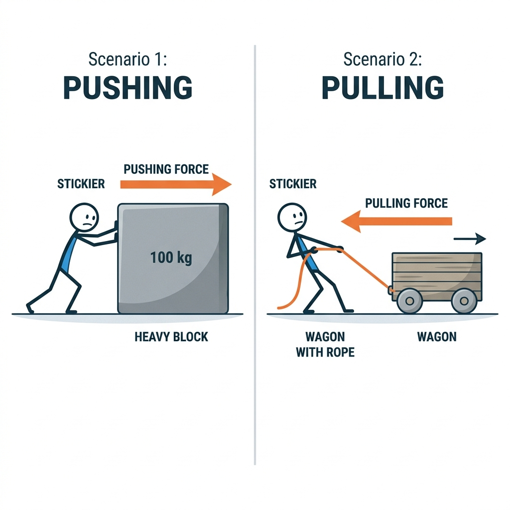
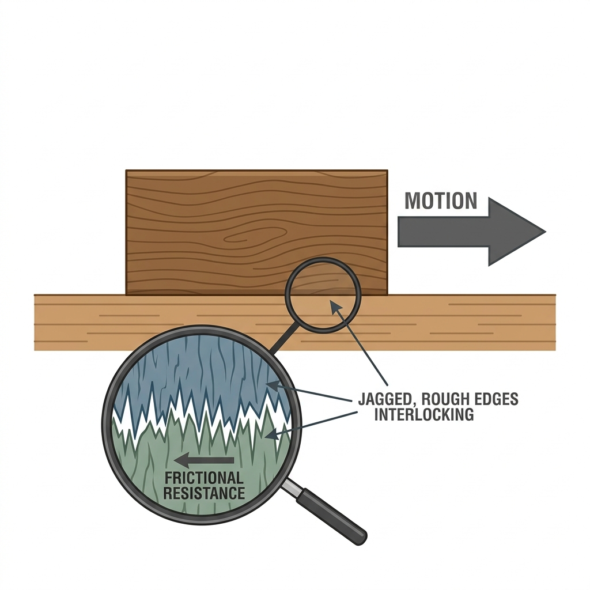
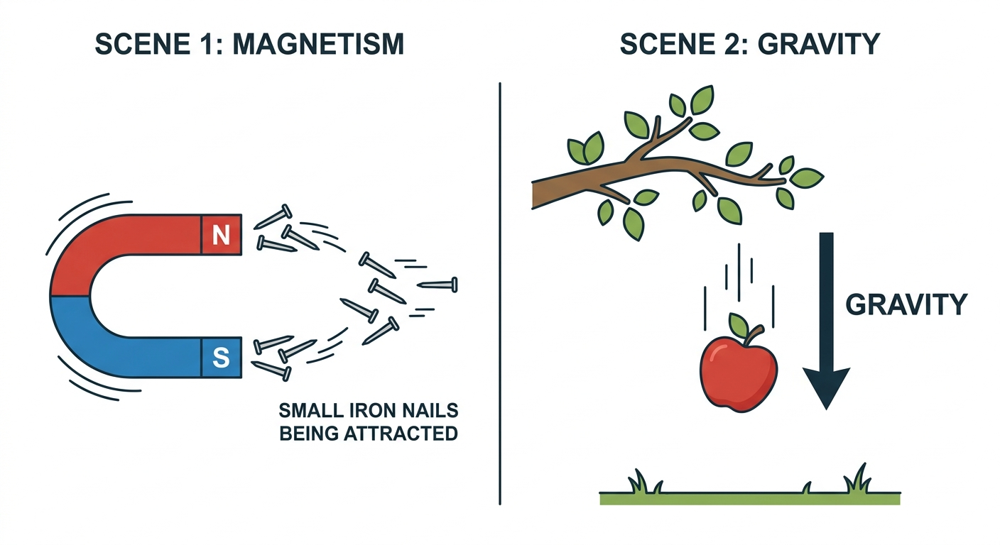
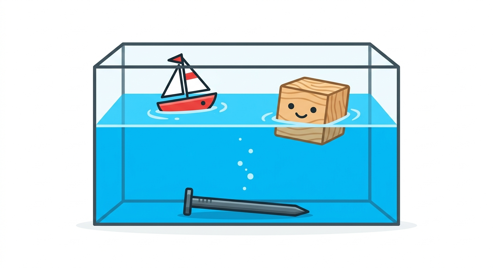

Vardaan Learning Institute
Class 8 Science • Chapter Notes
🌠vardaanlearning.com
📞 9508841336
Exploring Forces
1. What is a Force?

A force is a push or a pull that acts on an object and tries to change its state of rest or motion. For a force to act, there must be an interaction between two objects—one object applying the force and the other receiving it.
Effects of Force
Force can bring about the following changes in an object:
- Move an object from rest: A football kept still moves only when a player kicks it.
- Change the speed: A cyclist pedalling harder increases speed, while applying brakes slows it down.
- Change the direction: A batsman hitting a cricket ball changes the direction of the moving ball.
- Change the shape: Squeezing a rubber ball or rolling dough with a rolling pin changes its shape.
- Turning Effect (Torque): When a force is applied to an object fixed at a point (like a door hinge or steering wheel), it causes the object to rotate rather than move straight.
Concept
Magnitude and Unit of Force: The strength or size of a force is its magnitude. The standard (SI) unit of force is the Newton (N). If two forces act in the same direction, they add up. If they act in opposite directions, the net force is the difference between them, and the object moves in the direction of the stronger force.
2. Contact Forces
When one object pushes or pulls another by touching it directly or indirectly, it is called a contact force.
- Muscular Force: The force produced by the action of muscles in our body (e.g., walking, lifting a bag, chewing food). Animals also use muscular force to pull carts.
- Tension Force: The pulling force transmitted through a tightly stretched rope, string, or wire.
- Spring Force: The restoring force exerted by a compressed or stretched spring trying to return to its original length.
- Air Resistance (Drag): The frictional force that air exerts on objects moving through it, acting in the opposite direction to slow them down.
Friction: A Necessary Evil

Friction is the force that acts between two surfaces in contact, opposing the motion of one surface over the other. It is caused by the interlocking of tiny bumps and grooves on rough surfaces.
Types of Friction:
- Static Friction: The force that keeps an object at rest.
- Sliding Friction: The force that acts when an object is sliding over a surface.
- Rolling Friction: Occurs when an object rolls over a surface. It is much less than sliding friction (which is why suitcases have wheels).
Important
Controlling Friction:
Ways to Reduce Friction: Polishing surfaces, applying lubricants (oil, grease), using wheels or ball bearings, and streamlining shapes (aeroplanes, fish).
Ways to Increase Friction: Treaded tyres, spiked shoes for athletes, applying sand/gravel on slippery roads, and using rubber grips on handles.
3. Non-Contact Forces

Forces that can act from a distance without any physical contact are called non-contact forces.
- Magnetic Force: The pull or push exerted by a magnet on magnetic materials (iron, nickel) or other magnets. Like poles repel, unlike poles attract.
- Electrostatic Force: The force of attraction or repulsion between electrically charged particles (e.g., a plastic comb rubbed on dry hair attracting bits of paper).
- Gravitational Force: The invisible pull of the Earth that brings all objects towards its center. It gives weight to objects and keeps planets in orbit.
4. Mass vs. Weight
In science, mass and weight are not the same thing.
Fact
Mass is the amount of matter in an object. It remains constant everywhere in the universe and is measured in kilograms (kg) using a beam balance.
Weight is the gravitational force with which Earth pulls an object. It changes depending on gravity (e.g., you weigh less on the Moon) and is measured in Newtons (N) using a spring balance.
5. Floating and Sinking (Buoyancy)

When an object is placed in a liquid, gravity pulls it down, but the liquid pushes it up. The upward push applied by a fluid is called buoyant force or upthrust.
The Principle of Flotation
An object will float only when the weight of the fluid it displaces is exactly equal to its own weight.
Applications of Flotation:
- Iron Ships vs. Iron Nails: An iron nail sinks because it is dense and displaces very little water. A large ship is hollow, displacing a massive amount of water, creating enough upthrust to make it float.
- Submarines: Have special "ballast tanks". When filled with water, the submarine's density increases, and it sinks. When water is pumped out, it floats back up.
- Swimming: It is easier to float in sea water than in river water because sea water is salty and denser, providing a stronger upward buoyant force.